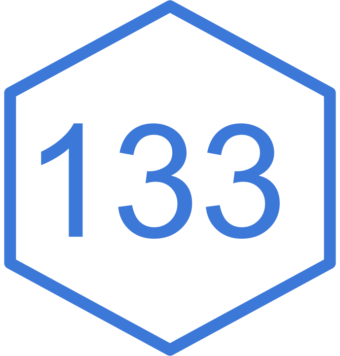

Time spans and time zones.
Last time:
How does a computer Store dates and times?
How do we Create dates and times?
How do we Get and Set them?
Today:
How do you specify Time Spans?
How do you account for Time Zones?
Oski, the official mascot for UC Berkeley, was debuted on September 27, 1941, during a freshman rally at the Greek Theatre.
Subtraction of two base R Date vectors -> difftime vector.
A difftime can be recorded in many different units, so better to use lubridate::as.duration() to always record it in seconds.
[1] "Duration"
attr(,"package")
[1] "lubridate"You can make a duration by coercing a Date object or using a constructor function.
[1] "2026-03-08 01:00:00 PST"Daylight savings time!
What is the answer to the following questions:
How long is a day?
How long is a year?
In "lubridate", a period is like a duration except it doesn’t have a fixed length in seconds. It tracks human units (day, week) that are responsive to irregularities.
difftime: inconsistent units
duration: fixed span in seconds
period: variable span in human units
interval: duration plus a starting point
Coordinated Universal Time (UTC) is primary global time standard. Successor to GMT.
Each time zone has a particular offset from UTC.
[1] "Africa/Abidjan" "Africa/Accra"
[3] "Africa/Addis_Ababa" "Africa/Algiers"
[5] "Africa/Asmara" "Africa/Asmera"
[7] "Africa/Bamako" "Africa/Bangui"
[9] "Africa/Banjul" "Africa/Bissau"
[11] "Africa/Blantyre" "Africa/Brazzaville"
[13] "Africa/Bujumbura" "Africa/Cairo"
[15] "Africa/Casablanca" "Africa/Ceuta"
[17] "Africa/Conakry" "Africa/Dakar"
[19] "Africa/Dar_es_Salaam" "Africa/Djibouti"
[21] "Africa/Douala" "Africa/El_Aaiun"
[23] "Africa/Freetown" "Africa/Gaborone"
[25] "Africa/Harare" "Africa/Johannesburg"
[27] "Africa/Juba" "Africa/Kampala"
[29] "Africa/Khartoum" "Africa/Kigali"
[31] "Africa/Kinshasa" "Africa/Lagos"
[33] "Africa/Libreville" "Africa/Lome"
[35] "Africa/Luanda" "Africa/Lubumbashi"
[37] "Africa/Lusaka" "Africa/Malabo"
[39] "Africa/Maputo" "Africa/Maseru"
[41] "Africa/Mbabane" "Africa/Mogadishu"
[43] "Africa/Monrovia" "Africa/Nairobi"
[45] "Africa/Ndjamena" "Africa/Niamey"
[47] "Africa/Nouakchott" "Africa/Ouagadougou"
[49] "Africa/Porto-Novo" "Africa/Sao_Tome"
[51] "Africa/Timbuktu" "Africa/Tripoli"
[53] "Africa/Tunis" "Africa/Windhoek"
[55] "America/Adak" "America/Anchorage"
[57] "America/Anguilla" "America/Antigua"
[59] "America/Araguaina" "America/Argentina/Buenos_Aires"
[61] "America/Argentina/Catamarca" "America/Argentina/ComodRivadavia"
[63] "America/Argentina/Cordoba" "America/Argentina/Jujuy"
[65] "America/Argentina/La_Rioja" "America/Argentina/Mendoza"
[67] "America/Argentina/Rio_Gallegos" "America/Argentina/Salta"
[69] "America/Argentina/San_Juan" "America/Argentina/San_Luis"
[71] "America/Argentina/Tucuman" "America/Argentina/Ushuaia"
[73] "America/Aruba" "America/Asuncion"
[75] "America/Atikokan" "America/Atka"
[77] "America/Bahia" "America/Bahia_Banderas"
[79] "America/Barbados" "America/Belem"
[81] "America/Belize" "America/Blanc-Sablon"
[83] "America/Boa_Vista" "America/Bogota"
[85] "America/Boise" "America/Buenos_Aires"
[87] "America/Cambridge_Bay" "America/Campo_Grande"
[89] "America/Cancun" "America/Caracas"
[91] "America/Catamarca" "America/Cayenne"
[93] "America/Cayman" "America/Chicago"
[95] "America/Chihuahua" "America/Ciudad_Juarez"
[97] "America/Coral_Harbour" "America/Cordoba"
[99] "America/Costa_Rica" "America/Coyhaique"
[101] "America/Creston" "America/Cuiaba"
[103] "America/Curacao" "America/Danmarkshavn"
[105] "America/Dawson" "America/Dawson_Creek"
[107] "America/Denver" "America/Detroit"
[109] "America/Dominica" "America/Edmonton"
[111] "America/Eirunepe" "America/El_Salvador"
[113] "America/Ensenada" "America/Fort_Nelson"
[115] "America/Fort_Wayne" "America/Fortaleza"
[117] "America/Glace_Bay" "America/Godthab"
[119] "America/Goose_Bay" "America/Grand_Turk"
[121] "America/Grenada" "America/Guadeloupe"
[123] "America/Guatemala" "America/Guayaquil"
[125] "America/Guyana" "America/Halifax"
[127] "America/Havana" "America/Hermosillo"
[129] "America/Indiana/Indianapolis" "America/Indiana/Knox"
[131] "America/Indiana/Marengo" "America/Indiana/Petersburg"
[133] "America/Indiana/Tell_City" "America/Indiana/Vevay"
[135] "America/Indiana/Vincennes" "America/Indiana/Winamac"
[137] "America/Indianapolis" "America/Inuvik"
[139] "America/Iqaluit" "America/Jamaica"
[141] "America/Jujuy" "America/Juneau"
[143] "America/Kentucky/Louisville" "America/Kentucky/Monticello"
[145] "America/Knox_IN" "America/Kralendijk"
[147] "America/La_Paz" "America/Lima"
[149] "America/Los_Angeles" "America/Louisville"
[151] "America/Lower_Princes" "America/Maceio"
[153] "America/Managua" "America/Manaus"
[155] "America/Marigot" "America/Martinique"
[157] "America/Matamoros" "America/Mazatlan"
[159] "America/Mendoza" "America/Menominee"
[161] "America/Merida" "America/Metlakatla"
[163] "America/Mexico_City" "America/Miquelon"
[165] "America/Moncton" "America/Monterrey"
[167] "America/Montevideo" "America/Montreal"
[169] "America/Montserrat" "America/Nassau"
[171] "America/New_York" "America/Nipigon"
[173] "America/Nome" "America/Noronha"
[175] "America/North_Dakota/Beulah" "America/North_Dakota/Center"
[177] "America/North_Dakota/New_Salem" "America/Nuuk"
[179] "America/Ojinaga" "America/Panama"
[181] "America/Pangnirtung" "America/Paramaribo"
[183] "America/Phoenix" "America/Port_of_Spain"
[185] "America/Port-au-Prince" "America/Porto_Acre"
[187] "America/Porto_Velho" "America/Puerto_Rico"
[189] "America/Punta_Arenas" "America/Rainy_River"
[191] "America/Rankin_Inlet" "America/Recife"
[193] "America/Regina" "America/Resolute"
[195] "America/Rio_Branco" "America/Rosario"
[197] "America/Santa_Isabel" "America/Santarem"
[199] "America/Santiago" "America/Santo_Domingo"
[201] "America/Sao_Paulo" "America/Scoresbysund"
[203] "America/Shiprock" "America/Sitka"
[205] "America/St_Barthelemy" "America/St_Johns"
[207] "America/St_Kitts" "America/St_Lucia"
[209] "America/St_Thomas" "America/St_Vincent"
[211] "America/Swift_Current" "America/Tegucigalpa"
[213] "America/Thule" "America/Thunder_Bay"
[215] "America/Tijuana" "America/Toronto"
[217] "America/Tortola" "America/Vancouver"
[219] "America/Virgin" "America/Whitehorse"
[221] "America/Winnipeg" "America/Yakutat"
[223] "America/Yellowknife" "Antarctica/Casey"
[225] "Antarctica/Davis" "Antarctica/DumontDUrville"
[227] "Antarctica/Macquarie" "Antarctica/Mawson"
[229] "Antarctica/McMurdo" "Antarctica/Palmer"
[231] "Antarctica/Rothera" "Antarctica/South_Pole"
[233] "Antarctica/Syowa" "Antarctica/Troll"
[235] "Antarctica/Vostok" "Arctic/Longyearbyen"
[237] "Asia/Aden" "Asia/Almaty"
[239] "Asia/Amman" "Asia/Anadyr"
[241] "Asia/Aqtau" "Asia/Aqtobe"
[243] "Asia/Ashgabat" "Asia/Ashkhabad"
[245] "Asia/Atyrau" "Asia/Baghdad"
[247] "Asia/Bahrain" "Asia/Baku"
[249] "Asia/Bangkok" "Asia/Barnaul"
[251] "Asia/Beirut" "Asia/Bishkek"
[253] "Asia/Brunei" "Asia/Calcutta"
[255] "Asia/Chita" "Asia/Choibalsan"
[257] "Asia/Chongqing" "Asia/Chungking"
[259] "Asia/Colombo" "Asia/Dacca"
[261] "Asia/Damascus" "Asia/Dhaka"
[263] "Asia/Dili" "Asia/Dubai"
[265] "Asia/Dushanbe" "Asia/Famagusta"
[267] "Asia/Gaza" "Asia/Harbin"
[269] "Asia/Hebron" "Asia/Ho_Chi_Minh"
[271] "Asia/Hong_Kong" "Asia/Hovd"
[273] "Asia/Irkutsk" "Asia/Istanbul"
[275] "Asia/Jakarta" "Asia/Jayapura"
[277] "Asia/Jerusalem" "Asia/Kabul"
[279] "Asia/Kamchatka" "Asia/Karachi"
[281] "Asia/Kashgar" "Asia/Kathmandu"
[283] "Asia/Katmandu" "Asia/Khandyga"
[285] "Asia/Kolkata" "Asia/Krasnoyarsk"
[287] "Asia/Kuala_Lumpur" "Asia/Kuching"
[289] "Asia/Kuwait" "Asia/Macao"
[291] "Asia/Macau" "Asia/Magadan"
[293] "Asia/Makassar" "Asia/Manila"
[295] "Asia/Muscat" "Asia/Nicosia"
[297] "Asia/Novokuznetsk" "Asia/Novosibirsk"
[299] "Asia/Omsk" "Asia/Oral"
[301] "Asia/Phnom_Penh" "Asia/Pontianak"
[303] "Asia/Pyongyang" "Asia/Qatar"
[305] "Asia/Qostanay" "Asia/Qyzylorda"
[307] "Asia/Rangoon" "Asia/Riyadh"
[309] "Asia/Saigon" "Asia/Sakhalin"
[311] "Asia/Samarkand" "Asia/Seoul"
[313] "Asia/Shanghai" "Asia/Singapore"
[315] "Asia/Srednekolymsk" "Asia/Taipei"
[317] "Asia/Tashkent" "Asia/Tbilisi"
[319] "Asia/Tehran" "Asia/Tel_Aviv"
[321] "Asia/Thimbu" "Asia/Thimphu"
[323] "Asia/Tokyo" "Asia/Tomsk"
[325] "Asia/Ujung_Pandang" "Asia/Ulaanbaatar"
[327] "Asia/Ulan_Bator" "Asia/Urumqi"
[329] "Asia/Ust-Nera" "Asia/Vientiane"
[331] "Asia/Vladivostok" "Asia/Yakutsk"
[333] "Asia/Yangon" "Asia/Yekaterinburg"
[335] "Asia/Yerevan" "Atlantic/Azores"
[337] "Atlantic/Bermuda" "Atlantic/Canary"
[339] "Atlantic/Cape_Verde" "Atlantic/Faeroe"
[341] "Atlantic/Faroe" "Atlantic/Jan_Mayen"
[343] "Atlantic/Madeira" "Atlantic/Reykjavik"
[345] "Atlantic/South_Georgia" "Atlantic/St_Helena"
[347] "Atlantic/Stanley" "Australia/ACT"
[349] "Australia/Adelaide" "Australia/Brisbane"
[351] "Australia/Broken_Hill" "Australia/Canberra"
[353] "Australia/Currie" "Australia/Darwin"
[355] "Australia/Eucla" "Australia/Hobart"
[357] "Australia/LHI" "Australia/Lindeman"
[359] "Australia/Lord_Howe" "Australia/Melbourne"
[361] "Australia/North" "Australia/NSW"
[363] "Australia/Perth" "Australia/Queensland"
[365] "Australia/South" "Australia/Sydney"
[367] "Australia/Tasmania" "Australia/Victoria"
[369] "Australia/West" "Australia/Yancowinna"
[371] "Brazil/Acre" "Brazil/DeNoronha"
[373] "Brazil/East" "Brazil/West"
[375] "Canada/Atlantic" "Canada/Central"
[377] "Canada/Eastern" "Canada/Mountain"
[379] "Canada/Newfoundland" "Canada/Pacific"
[381] "Canada/Saskatchewan" "Canada/Yukon"
[383] "CET" "Chile/Continental"
[385] "Chile/EasterIsland" "CST6CDT"
[387] "Cuba" "EET"
[389] "Egypt" "Eire"
[391] "EST" "EST5EDT"
[393] "Etc/GMT" "Etc/GMT-0"
[395] "Etc/GMT-1" "Etc/GMT-10"
[397] "Etc/GMT-11" "Etc/GMT-12"
[399] "Etc/GMT-13" "Etc/GMT-14"
[401] "Etc/GMT-2" "Etc/GMT-3"
[403] "Etc/GMT-4" "Etc/GMT-5"
[405] "Etc/GMT-6" "Etc/GMT-7"
[407] "Etc/GMT-8" "Etc/GMT-9"
[409] "Etc/GMT+0" "Etc/GMT+1"
[411] "Etc/GMT+10" "Etc/GMT+11"
[413] "Etc/GMT+12" "Etc/GMT+2"
[415] "Etc/GMT+3" "Etc/GMT+4"
[417] "Etc/GMT+5" "Etc/GMT+6"
[419] "Etc/GMT+7" "Etc/GMT+8"
[421] "Etc/GMT+9" "Etc/GMT0"
[423] "Etc/Greenwich" "Etc/UCT"
[425] "Etc/Universal" "Etc/UTC"
[427] "Etc/Zulu" "Europe/Amsterdam"
[429] "Europe/Andorra" "Europe/Astrakhan"
[431] "Europe/Athens" "Europe/Belfast"
[433] "Europe/Belgrade" "Europe/Berlin"
[435] "Europe/Bratislava" "Europe/Brussels"
[437] "Europe/Bucharest" "Europe/Budapest"
[439] "Europe/Busingen" "Europe/Chisinau"
[441] "Europe/Copenhagen" "Europe/Dublin"
[443] "Europe/Gibraltar" "Europe/Guernsey"
[445] "Europe/Helsinki" "Europe/Isle_of_Man"
[447] "Europe/Istanbul" "Europe/Jersey"
[449] "Europe/Kaliningrad" "Europe/Kiev"
[451] "Europe/Kirov" "Europe/Kyiv"
[453] "Europe/Lisbon" "Europe/Ljubljana"
[455] "Europe/London" "Europe/Luxembourg"
[457] "Europe/Madrid" "Europe/Malta"
[459] "Europe/Mariehamn" "Europe/Minsk"
[461] "Europe/Monaco" "Europe/Moscow"
[463] "Europe/Nicosia" "Europe/Oslo"
[465] "Europe/Paris" "Europe/Podgorica"
[467] "Europe/Prague" "Europe/Riga"
[469] "Europe/Rome" "Europe/Samara"
[471] "Europe/San_Marino" "Europe/Sarajevo"
[473] "Europe/Saratov" "Europe/Simferopol"
[475] "Europe/Skopje" "Europe/Sofia"
[477] "Europe/Stockholm" "Europe/Tallinn"
[479] "Europe/Tirane" "Europe/Tiraspol"
[481] "Europe/Ulyanovsk" "Europe/Uzhgorod"
[483] "Europe/Vaduz" "Europe/Vatican"
[485] "Europe/Vienna" "Europe/Vilnius"
[487] "Europe/Volgograd" "Europe/Warsaw"
[489] "Europe/Zagreb" "Europe/Zaporozhye"
[491] "Europe/Zurich" "Factory"
[493] "GB" "GB-Eire"
[495] "GMT" "GMT-0"
[497] "GMT+0" "GMT0"
[499] "Greenwich" "Hongkong"
[501] "HST" "Iceland"
[503] "Indian/Antananarivo" "Indian/Chagos"
[505] "Indian/Christmas" "Indian/Cocos"
[507] "Indian/Comoro" "Indian/Kerguelen"
[509] "Indian/Mahe" "Indian/Maldives"
[511] "Indian/Mauritius" "Indian/Mayotte"
[513] "Indian/Reunion" "Iran"
[515] "Israel" "Jamaica"
[517] "Japan" "Kwajalein"
[519] "Libya" "MET"
[521] "Mexico/BajaNorte" "Mexico/BajaSur"
[523] "Mexico/General" "MST"
[525] "MST7MDT" "Navajo"
[527] "NZ" "NZ-CHAT"
[529] "Pacific/Apia" "Pacific/Auckland"
[531] "Pacific/Bougainville" "Pacific/Chatham"
[533] "Pacific/Chuuk" "Pacific/Easter"
[535] "Pacific/Efate" "Pacific/Enderbury"
[537] "Pacific/Fakaofo" "Pacific/Fiji"
[539] "Pacific/Funafuti" "Pacific/Galapagos"
[541] "Pacific/Gambier" "Pacific/Guadalcanal"
[543] "Pacific/Guam" "Pacific/Honolulu"
[545] "Pacific/Johnston" "Pacific/Kanton"
[547] "Pacific/Kiritimati" "Pacific/Kosrae"
[549] "Pacific/Kwajalein" "Pacific/Majuro"
[551] "Pacific/Marquesas" "Pacific/Midway"
[553] "Pacific/Nauru" "Pacific/Niue"
[555] "Pacific/Norfolk" "Pacific/Noumea"
[557] "Pacific/Pago_Pago" "Pacific/Palau"
[559] "Pacific/Pitcairn" "Pacific/Pohnpei"
[561] "Pacific/Ponape" "Pacific/Port_Moresby"
[563] "Pacific/Rarotonga" "Pacific/Saipan"
[565] "Pacific/Samoa" "Pacific/Tahiti"
[567] "Pacific/Tarawa" "Pacific/Tongatapu"
[569] "Pacific/Truk" "Pacific/Wake"
[571] "Pacific/Wallis" "Pacific/Yap"
[573] "Poland" "Portugal"
[575] "PRC" "PST8PDT"
[577] "ROC" "ROK"
[579] "Singapore" "Turkey"
[581] "UCT" "Universal"
[583] "US/Alaska" "US/Aleutian"
[585] "US/Arizona" "US/Central"
[587] "US/East-Indiana" "US/Eastern"
[589] "US/Hawaii" "US/Indiana-Starke"
[591] "US/Michigan" "US/Mountain"
[593] "US/Pacific" "US/Samoa"
[595] "UTC" "W-SU"
[597] "WET" "Zulu"
attr(,"Version")
[1] "2025b"Two flavors
Change the instant in time.
[1] "2024-06-01 12:00:00 EDT"